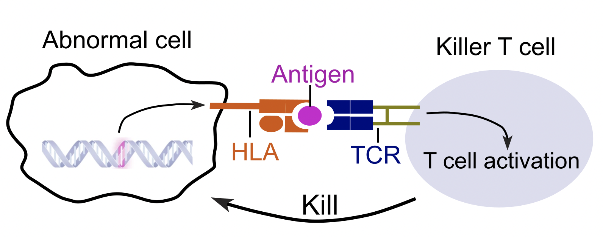
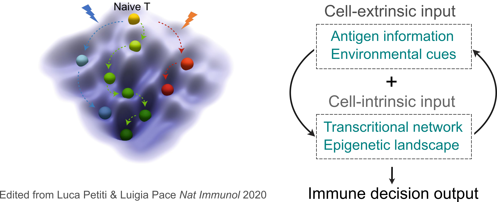
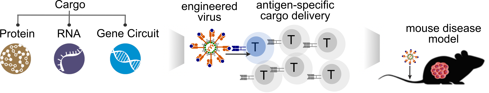
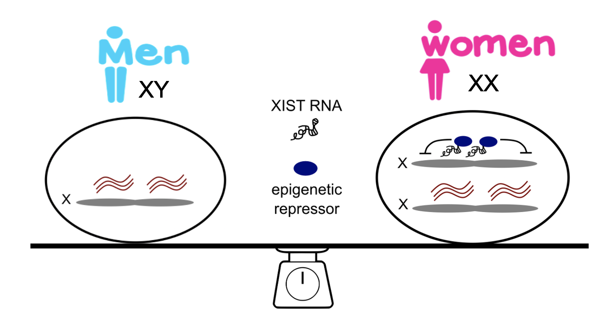

OUR VISION
We are striving to unlock the power of the adaptive immune system to create next-generation immune therapeutics for cancer, autoimmunity, and infectious diseases. To do this, we will decode the dialogue of immune responses to develop protection that is as wide-ranging as possible, target and clear threats as specifically as possible, and evoke an optimal immune memory that is as durable as possible.
CURRENT RESEARCH
Mapping T Cell-Tumor Recognition at the Single-Cell Level
Cytotoxic T cells are a key component of our immune system, capable of recognizing and attacking cancer cells without harming healthy cells. To develop personalized cancer immunotherapies, it is essential to identify the tumor neoantigens and paired T cell receptors (TCRs) in each patient. To this end, we have developed ENTER, a viral platform that can map antigen specificity, TCR repertoire, and molecular phenotype of T cells at the single-cell level. Combining viral engineering, single-cell genomics, and high-throughput library screening, we will develop a suite of tools to answer the following questions:
- How can we systematically identify the "immune-visible" tumor neoantigens to prioritize candidates for tumor neoantigen vaccine development?
- How can we rapidly identify the tumor antigen-specific TCRs in a high-throughput manner to advance TCR-T cell adoptive transfer therapy for cancer patients?
- How does tumor neoantigen specificity impact anti-tumor T cell fate and function?
Deciphering Antigen-Specific T Cell Fate Decision in Response to External Cues
Beyond antigen specificity, environmental cues such as cytokine exposure or cell-cell communication, can modulate the molecular programming and functional diversity of antigen-specific T cells. Previously, we have deciphered the molecular blueprint of T cell precursors upon infection via epigenetic and transcriptional profiling. By integrating epigenetic landscape and transcriptional network, we identified key transcription factors YY1 and NR3C1 that govern effector or memory precursor T cell decision, and further uncovered a unique role of RUNX3 in T cell infiltration in tumors. Our lab will combine CRISPR screen, epigenetic profiling and functional genomics to answer the following questions:
- How do environmental cues reshape the epigenetic plasticity of T cells in tumors and infected tissues?
- How can we identify key molecular drivers that fine-tune T cell behavior and fate decision?
Developing Tools for Targeted Cargo Delivery for Precision Immunotherapeutics
The advancement of immunotherapy, such as immune checkpoint blockade, has revolutionized cancer treatment and improved the lives of many patients. However, this treatment can also cause Immune-Related Adverse Events (irAEs) due to overstimulation of self-reactive T cells, which attack healthy cells in the human body. To reduce the risk of irAEs in the next generation of immunotherapy, we will use ENTER to develop delivery tools that specifically reinvigorate exhausted tumor-reactive T cells without activating self-reactive T cells. These tools will reshape the immune repertoire, paving the way for precision immunotherapy for cancer and autoimmunity.
Exploring X-inactivation maintenance in female-biased autoimmunity
Females, harboring two X chromosomes, exhibit a heightened immune response to infections, however are more prone to develop autoimmune diseases compared to males with one X chromosome. Our recent work unveiled a critical role of female-specific lncRNA XIST in maintaining X-inactivation of key immune genes in B cells. We will further explore the molecular mechanism of X-inactivation maintenance in age-associated B cells, a subset that is abnormally expanded in patients with female-biased autoimmune diseases.
We are grateful for the funding support from sponsors who believe and invest in our research